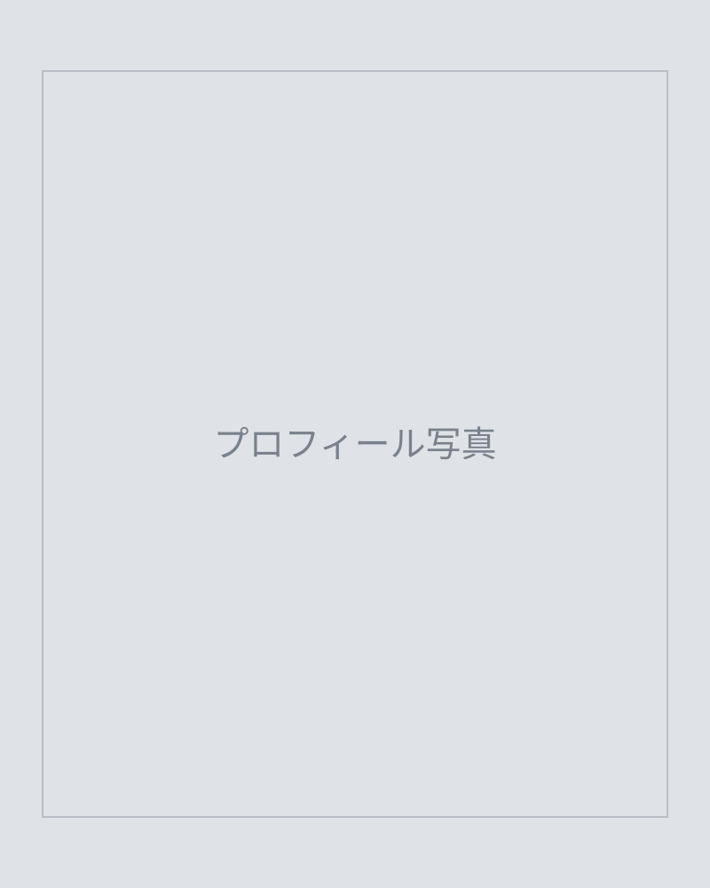

山田 太郎
アートディレクター
制作会社で10年、D2C、小売、SaaSの企業のブランド設計とWeb・アプリのアートディレクションを担当してきました。
いつも最初にするのは、依頼の背景にある事業の数字を見ることです。「かっこよくしたい」「若い人に届けたい」という依頼も、数字とお客さまの行動を確かめると、別の課題が見えてくることが多くあります。課題を言い直し、関係者と合意してから形にする。この進め方で、見た目の評価だけでなく、事業の成果につながる仕事をしてきました。
これからは事業会社の一員として、ひとつのブランドを長く育てる仕事がしたいと考えています。
得意なこと
課題を言い直す
依頼の言葉と事業の数字を照らし合わせ、解くべき課題を一文にします。デザインに入る前に、関係者とその一文で合意します。
判断を言葉で説明する
なぜこの色、この構成なのかを、事業部やエンジニアにも伝わる言葉で説明します。好みの議論で止まらないように進めます。
使い続けられる仕組みにする
ガイドラインやデザインシステムに落とし込み、自分がいなくても品質が保たれる状態をつくります。
事業会社で発揮できること
- 事業のKPIから逆算して、デザインの目的と評価の方法を決められる
- マーケティング、プロダクト、営業など、立場の違う人と合意をつくれる
- リリースして終わりではなく、数字を見ながら改善を続けられる
- 社内外のデザイナーやパートナーに、方針を渡して品質を管理できる
経歴
-
株式会社サンプル制作 アートディレクター
D2C、小売、SaaSのブランド刷新、Webサイト、アプリのアートディレクションを担当。4〜6名のチームを率いる。
-
株式会社サンプル制作 デザイナー
コーポレートサイト、キャンペーンサイト、販促物のデザインを担当。
-
サンプル美術大学 デザイン学科 卒業
スキルと道具
| 領域 | ブランド設計、アートディレクション、Webサイト、アプリUI、販促、撮影ディレクション |
|---|---|
| 進め方 | ユーザーインタビュー、データ分析の読み解き、ワークショップの設計と進行、デザインシステムの構築 |
| 道具 | Figma、Adobe Photoshop、Illustrator、After Effects、Googleアナリティクス、HTML／CSS |
| 受賞など | サンプルデザイン賞 2024 入選（例） |